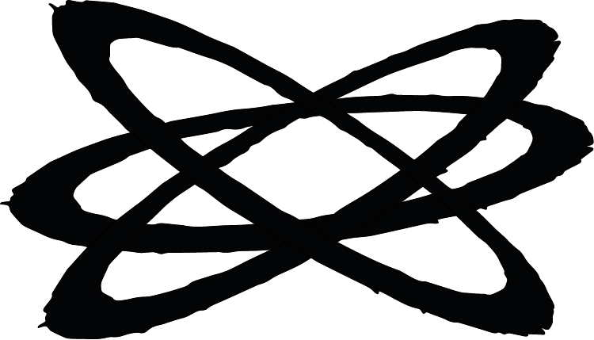
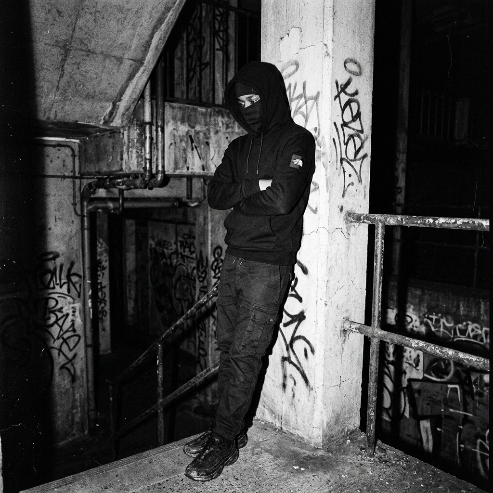

COMPRA ABURRIDA,
MARCA MUERTA.
Ves la prenda. Eliges la talla. Pagas. Te llega a casa.
El sistema funciona, pero ha matado el deseo.
Nosotros no hacemos ropa para que la eches al carrito. Hacemos prendas para que te la juegues.
Si quieres saber exactamente qué vas a recibir, ve a una tienda.
Si quieres sentir algo al abrir una caja, entra en el drop.
BLINDSAINT.
WE BREAK THE WAY CLOTHES ARE BOUGHT.
STREETWEAR EXPERIENCIAL
Combinamos la crudeza visual de la cultura urbana británica con mecánicas de compra basadas en la incertidumbre y la exclusividad.
DEVOLVER EL RIESGO
Devolverle la tensión a la compra de moda. Romper el formato transaccional plano y convertir cada adquisición en un evento.

Una marca urbana de premium accesible que transforma la compra de streetwear en una experiencia caótica, limitada y misteriosa.

NUESTRA MISIÓN
Crear prendas, drops y experiencias de compra que devuelvan emoción, misterio y pertenencia al streetwear, rompiendo con el modelo de compra tradicional y construyendo una comunidad que valore la exclusividad, la estética y la sorpresa.
LA VISIÓN
Convertir BlindSaint en una marca urbana de culto dentro del streetwear emergente europeo, reconocida por haber transformado la forma de comprar ropa mediante drops limitados, blind boxes, caos controlado, comunidad y una estética inspirada en la cultura UK.
LO QUE NO SABES TAMBIÉN VALE
El misterio genera más deseo que la certeza.
CONTRA LO PREDECIBLE
Contra el fast fashion. Contra las compras predecibles y la hiperdisponibilidad. Contra el streetwear domesticado que parece merchandising corporativo. Contra las marcas vacías de Instagram que solo venden un logo sin experiencia.
DUALIDAD
LO QUE SOMOS
- [+] URBANOS / CALLEJEROS / REBELDES
- [+] OSCUROS / BRUTALISTAS / EDITORIALES
- [+] MISTERIOSOS / DE CULTO
- [+] PREMIUM ACCESIBLE / INTERNACIONALES
LO QUE NO SOMOS
- [-] GENÉRICOS / INFANTILES / FAST FASHION
- [-] MOTIVACIONALES / LIMPIOS EN EXCESO
- [-] MARCAS VACÍAS / COMPLACIENTES
- [-] LUJO CLÁSICO / EXCESIVAMENTE LOCALES
LOS CÓDIGOS DE LA CALLE
| CÓDIGO | SIGNIFICADO |
|---|---|
| 01 / CAOS CONTROLADO | Impredecibles, pero nunca improvisados. El caos tiene dirección creativa. |
| 02 / MISTERIO Y DOPAMINA | La incertidumbre es parte del deseo. Expectativa, tensión y recompensa. |
| 03 / COMUNIDAD PEQUEÑA | La exclusividad nace de que no todos nos conocen. El acceso importa. |
| 04 / CALLE REAL | Estética urbana real, sin domesticar. Cruda y analógica. |
17 - 26 AÑOS
Metidos en el streetwear, UK Drill, música urbana y drop culture. Buscan exclusividad y pertenencia.
- [+] MOTIVACIONES: Estética, comunidad, exclusividad, dopamina del misterio.
- [-] BARRERAS: Desconfianza, incertidumbre excesiva sin garantías, falta de prueba social.
"ESTOY HARTO DE VER A TODO EL MUNDO CON LA MISMA ROPA Y LAS MISMAS MARCAS. QUIERO ALGO QUE LOS DEMÁS NO TENGAN, Y ME ABURRE COMPRAR SABIENDO EXACTAMENTE LO QUE VA A LLEGAR."
- UK DRILL: Noches urbanas, bloques, CCTV.
- DROP CULTURE: El acceso restringido, el soldado que lo consigue.
- MYSTERY: La adrenalina del azar, ruletas, cajas sorpresa.
- CORTEIZ: Comunidad, códigos, drop culture.
- MAKTUB/METRA: Movimiento, aspiracional.
- ACNE STUDIOS: Percepción premium.
- BRUTALISM: Editorial crudo, flyers, tickets.
CLEAN STREETWEAR
Marcas como Cold Culture, Eme Studios o Scuffers: percibidas internamente como demasiado limpias, repetitivas, basadas solo en vender sin riesgo ni experiencia. Somos la antítesis.
CALLEJERO PERO PREMIUM
Directo y Concreto: Frases cortas tipo sentencia. Seguro, misterioso.
Inglés / Español: Inglés para estética y drops, español para comunidad.
EJEMPLO: Más "Esto es así" que "Queremos inspirarte".
- THE BOX DECIDES.
- NO PREVIEWS.
- OPEN IT FIRST.
- YOU WEREN’T SUPPOSED TO FIND THIS.
- NOT EVERYONE GETS IN.
- THE DROP CHOOSES.
- BLIND BY DESIGN.
- WEAR THE UNKNOWN.